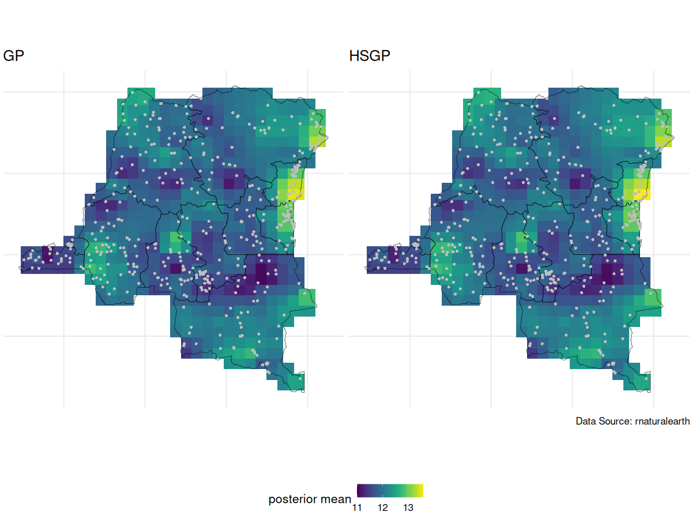
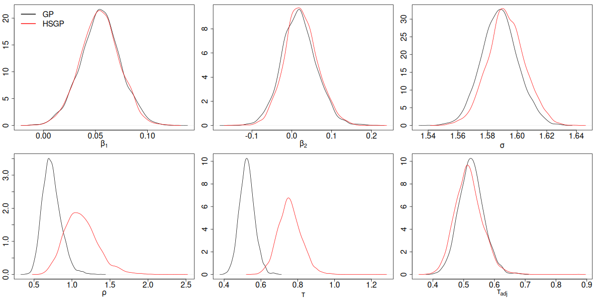
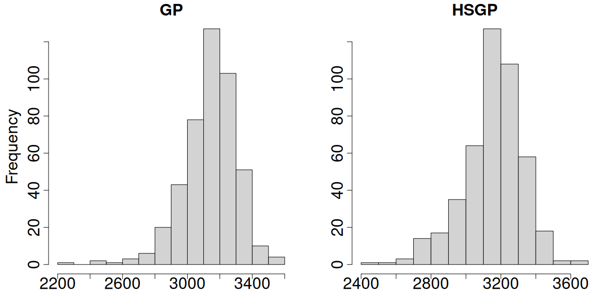

Scalable Gaussian Processes #2
Geospatial analysis on hemoglobin dataset
We wanted to perform geospatial analysis on a dataset with ~8,600 observations at ~500 locations, and make predictions at ~440 locations on a grid.
Geospatial model
We specify the following model: \[\mathbf{Y} = \alpha \mathbf{1}_{N} + \mathbf{X} \boldsymbol{\beta} + \mathbf{Z}\boldsymbol{\theta} + \boldsymbol{\epsilon}, \quad \boldsymbol{\epsilon} \sim N_N(\mathbf{0},\sigma^2\mathbf{I})\] with priors
- \(\boldsymbol{\theta} | \tau,\rho \sim GP(\mathbf{0},C(\cdot,\cdot))\), where \(C\) is the Matérn 3/2 covariance function with magnitude \(\tau\) and length scale \(\rho\)
- \(\alpha^* \sim N(0,4^2)\). This is the intercept after centering \(\mathbf{X}\).
- \(\beta_j | \sigma_{\beta} \sim N(0,\sigma_{\beta}^2)\), \(j \in \{1,\dots,p\}\)
- \(\sigma \sim \text{Half-Normal}(0, 2^2)\)
- \(\tau \sim \text{Half-Normal}(0, 4^2)\)
- \(\rho \sim \text{Inv-Gamma}(5, 5)\)
- \(\sigma_{\beta} \sim \text{Half-Normal}(0, 2^2)\)
Review of the last lecture
Gaussian process (GP) is not scalable as it requires \(\mathcal{O}(n^3)\) flops per MCMC iteration.
Introduced HSGP, a Hilbert space low-rank approximation method for GP. \[\mathbf{C} \approx \boldsymbol{\Phi}\mathbf{S}\boldsymbol{\Phi}^T, \quad \text{where}\]
- \(\boldsymbol{\Phi} \in \mathbb{R}^{n \times m}\) only depends on the approximation box \(\boldsymbol{\Theta}\) and observed locations.
- \(\mathbf{S} \in \mathbb{R}^{m \times m}\) is diagonal. It depends on the covariance function \(C\) and parameters \(\tau\) and \(\rho\).
- \(m\) is the number of basis functions.
Model reparameterization under HSGP.
Bayesian model fitting and kriging under HSGP.
HSGP parameters
Solin and Särkkä (2020) showed that HSGP approximation can be made arbitrarily accurate as \(\boldsymbol{\Theta}\) and \(m\) increase.
Our goal:
- Minimize the run time while maintaining reasonable approximation accuracy.
- Find minimum \(\boldsymbol{\Theta}\) and \(m\) with reasonable accuracy.
Note: we treat estimation of the GP magnitude parameter \(\tau\) as a separate problem, and only consider approximation accuracy of HSGP in terms of the correlation function.
HSGP approximation box
Due to the design of HSGP, the approximation is less accurate near the boundaries of \(\boldsymbol{\Theta}\).
- Suppose all the coordinates are centered. Let \[S_l = \max_i |\mathbf{u}_{il}|, \quad l=1,\dots,d, \quad i= 1, \dots, (n+q)\] such that \(\boldsymbol{\Theta}_S = \prod_{l=1}^d [-S_l,S_l]\) is the smallest box which contains all observed and prediction locations. We should at least ensure \(\boldsymbol{\Theta} \supset \boldsymbol{\Theta}_S\).
- We want the box to be large enough to ensure good boundary accuracy. Let \(c_l \ge 1\) be boundary factors, we consider \[\boldsymbol{\Theta} = \prod_{l=1}^d [-L_l,L_l], \quad L_l = c_l S_l.\]
HSGP approximation box and \(\rho\)

How much the approximation accuracy deteriorates towards the boundaries depends on smoothness of the true surface.
- the larger the length scale \(\rho\), the smoother the surface, a smaller box (smaller \(c\)) can be used for the same level of boundary accuracy.
HSGP approximation box and \(m\)
The larger the box,
- the more basis functions we need for the same level of overall accuracy,
- hence higher run time.
Zooming out doesn’t simplify the problem

- If we scale the coordinates by a constant \(b\), the length scale \(\rho\) of the underlying GP also needs to be approximately scaled by \(b\) to capture the same level of details in the data.
- We can effectively think of the length scale parameter as \((\rho/\|\mathbf{S}\|)\).
HSGP basis functions
The total number of basis functions \(m = \prod_{l=1}^d m_l\), i.e., we need to decide on \(m_l\)’s, the number of basis functions for each dimension.
- \(m\) scales exponentially in \(d\), hence the HSGP computation complexity \(\mathcal{O}(nm+m)\) also scales exponentially in \(d\). Therefore HSGP is only recommended for \(d \le 3\), at most \(4\).
- The higher the \(m\), the better the overall approximation accuracy, the higher the runtime.
Relationship between \(c\), \(m\) and \(\rho/S\)
Let’s quickly recap. For simplicity, let \(d=1\),
- As \((\rho/S)\) decreases, the surface is less smooth,
- \(c\) needs to increase to retain boundary accuracy.
- \(m\) needs to increase to retain overall accuracy.
- As \(c\) increases, \(m\) needs to increase to retain overall accuracy.
- As \(m\) increases, run time increases.
Empirical functional form
Still assuming \(d=1\). If \(\rho\) is known to us,
- given \(c\) and \(\rho/S\) and the covariance function \(C\), we can compute \(m(c,\rho/S)\), the minimum number of basis functions needed for a near 100% approximation accuracy of the correlation matrix.
- Riutort-Mayol et al. (2023) used extensive simulations to obtain an empirical function form of \(m(c,\rho/S)\) for frequently used Matérn covariance functions. E.g., for Matérn 3/2,
\[m_{3/2}(c,\rho/S)=3.24 \frac{c}{\rho/S}, \quad c \ge 4.5 \frac{\rho}S, \quad c \ge 1.2.\]
Empirical functional form
\[m(c,\rho/S)=3.24 \frac{c}{\rho/S}, \quad c \ge 4.5 \frac{\rho}S, \quad c \ge 1.2.\]
- Notice the linear proportionality between \(m\), \(c\) and \(\rho/S\).
- For a given \(\rho/S\), there exists a minimum \(c(\rho/S)=\min(4.5\rho/S,1.2)\), below which the approximation is poor no matter how large \(m\) is.
- From \(m(c,\rho/S)\), we also have \[\rho(m,c,S)=3.42 S \frac cm,\] the minimum \(\rho\) (least smooth surface) that can be well approximated given \(c\), \(m\) and \(S\).
Question
BUT, in real applications, we do not know \(\rho\).
So how to make use of \(m(c,\rho/S)\) to help choose \(c\) and \(m\)?
An iterative algorithm
Pseudo-codes for HSGP parameter tuning assuming \(d=1\).
u = center(observed and prediction locations)
S = box size (u)
max_iter = 30
# initialization
j = 0
check = FALSE
rho = 0.5*S # the practical paper recommends setting the initial guess of rho to be 0.5 to 1 times S
c = c(rho/S) # minimum c given rho and S
m = m(c,rho/S) # minimum m given c, and rho/S
L = c*S
diagnosis = logical(max_iter) # store checking results for each iteration
while (!check & j<=max_iter){
fit = runHSGP(L,m) # stan run
j = j + 1
rho_hat = mean(fit$rho) # obtain fitted value for rho
# check the fitted is larger than the minimum rho that can be well approximated
diagnosis[j] = (rho_hat + 0.01 >= rho)
if (j==1) {
if (diagnosis[j]){
# if the diagnosis check is passed, do one more run just to make sure
m = m + 2
c = c(rho_hat/S)
rho = rho(m,c,S)
} else {
# if the check failed, update our knowledge about rho
rho = rho_hat
c = c(rho/S)
m = m(c,rho/S)
}
} else {
if (diagnosis[j] & diagnosis[j-2]){
# if the check passed for the last two runs, we finish tuning
check = TRUE
} else if (diagnosis[j] & !diagnosis[j-2]){
# if the check failed last time but passed this time, do one more run
m = m + 2
c = c(rho_hat/S)
rho = rho(m,c,S)
} else if (!diagnosis[j]){
# if the check failed, update our knowledge about rho
rho = rho_hat
c = c(rho/S)
m = m(c,rho/S)
}
}
L = c*S
}HSGP implementation codes
Please clone the repo for AE 09 for HSGP implementation codes.
Side notes on HSGP implementation
A few random things to keep in mind for implementation in practice:
- If your HSGP run is suspiciously VERY slow, check the number of basis functions being used in the run and make sure it is reasonable.
- Check whether \(m \le n\) before using the kriging results.
- Because HSGP is a low-rank approximation method, the GP magnitude parameter \(\tau\) will always be overestimated. However, we can account for this and use a bias-adjusted \(\tau\) instead. See the AE 09
stancodes for parametertau_adj. - If \(d>1\), we need to do parameter tuning for each dimension.
Side notes on HSGP implementation
A few random things to keep in mind for implementation in practice:
It is possible to use different length scale parameters for each dimension. See demo codes here for examples.
The iterative algorithm described in Riutort-Mayol et al. (2023) (i.e., pseudo-codes on slide 15) can be further improved:
- it sometimes stops at a place.
- it sometimes runs into a circular loop. See AE 09
stancodes for one possible fix. - it errs on the safe side and only changes \(m\) if it might be too small.
Due to identifiability issues, we always look at the spatial intercept \(\alpha \mathbf{1}+\boldsymbol{\theta}\) together instead of just \(\boldsymbol{\theta}\).
GP vs HSGP spatial intercept posterior mean

GP vs HSGP spatial intercept posterior SD

GP vs HSGP parameter posterior density

GP vs HSGP correlation function

GP vs HSGP effective sample size

Prepare for next class
- Work on HW 05 which is due Apr 8
- Complete reading to prepare for Tuesday’s lecture
- Tuesday’s lecture: Bayesian Clustering
References
Riutort-Mayol, Gabriel, Paul-Christian Bürkner, Michael R Andersen, Arno Solin, and Aki Vehtari. 2023. “Practical Hilbert Space Approximate Bayesian Gaussian Processes for Probabilistic Programming.” Statistics and Computing 33 (1): 17.
Solin, Arno, and Simo Särkkä. 2020. “Hilbert Space Methods for Reduced-Rank Gaussian Process Regression.” Statistics and Computing 30 (2): 419–46.